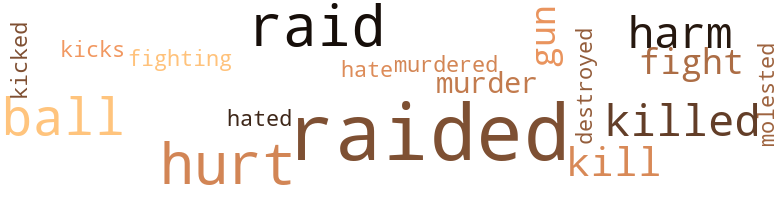

Secret (The), by Jones, Thomas Alfred (1955)
8 music-related terms matched in this text.
Most frequent terms in this topic: section (3); dance (2); line (1); music (1); piano (1)
dance.n.01
Definition: an artistic form of nonverbal communication
| word | sentence |
|---|---|
| dance | I was a member of the first group sponsoring this dance . |
| dance | When we got to the dance , however , we found that things had changed . |
music.n.01
Definition: an artistic form of auditory communication incorporating instrumental or vocal tones in a structured and continuous manner
| word | sentence |
|---|---|
| music | One day the vice squad came around , but we were only listening to music and dancing , so there was nothing they could do . |
piano.n.01
Definition: a keyboard instrument that is played by depressing keys that cause hammers to strike tuned strings and produce sounds
| word | sentence |
|---|---|
| piano | I bought a player piano , which we used for parties . |
section.n.01
Definition: a self-contained part of a larger composition (written or musical)
| word | sentence |
|---|---|
| section | They told me they were going to put me in charge of the colored numbers office in the northwest section of the city . |
| section | He had almost all of the numbers in the northwest section of town . |
| section | Mr. Moore decided to divide his business into four parts ; one in Georgetown , to be run by Bill Shannon ; a second on Belmont Street N.W. , to be run by Harry Lin-sey ; a third in the northwest section of Washington , to be run by Bill Dude ; and the fourth to be his main office , on Fourteenth Street N.W. His brother and he would run it . |
tune.n.01
Definition: a succession of notes forming a distinctive sequence
| word | sentence |
|---|---|
| line | Thomas , why did you stay away so long and not even write a line ? |
75 violence-related terms matched in this text.
Most frequent terms in this topic: raided (20); hurt (9); raid (9); killed (5); ball (5)
destroy.v.04
Definition: put (an animal) to death
| word | sentence |
|---|---|
| destroyed | The place in Seaton Street was soon closed ; the police broke in one morning and destroyed everything . |
fight.v.02
Definition: fight against or resist strongly
| word | sentence |
|---|---|
| fighting | He told me that Keelen and Mickey were fighting him for letting a Negro have such a place . |
| fight | You 'll have to fight this battle the best you can . |
| fight | I told him that I needed a lot of money to fight my case . |
| fight | I decided to fight for his position . |
gun.n.01
Definition: a weapon that discharges a missile at high velocity (especially from a metal tube or barrel)
| word | sentence |
|---|---|
| gun | Ever since I had been beaten up , I had kept a gun in my pocket when I was in my place . |
| gun | The first thing that Thorman did when he grabbed me was to put his hand in my pocket and take the gun out after he hit me . |
| gun | There is a gun and some shells in the house , so you can hunt . |
hate.v.01
Definition: dislike intensely; feel antipathy or aversion towards
| word | sentence |
|---|---|
| hated | Although she reproved me for being in the rackets , which she hated , she loyally stuck by me . |
| hate | " Mother , I hate to tell you but I 've not continued to go to school . |
injury.n.01
Definition: any physical damage to the body caused by violence or accident or fracture etc.
| word | sentence |
|---|---|
| harm | He told me he was not ; even if he were , he said , he would not do me any harm . |
| harm | Maybe , after they find out that she is working for you , they wo n't try to do you any harm ; but for my part , I have got to stay away from her , and I do n't want her to know anything about my business . |
| harm | He replied that he had not seen either of them and was not trying to do me any harm , but just trying to straighten the case out . |
| harm | He said that I did n't have anything to worry about because he had known me for years and had never done me any harm . |
| harm | I said that both of them were my friends and would n't do you any harm because I had told them that I was behind you . |
| hurt | The thought hurt me to my heart , but I could n't tell them . |
kick_back.v.02
Definition: spring back, as from a forceful thrust
| word | sentence |
|---|---|
| kicks | If you 're careful with it , maybe you 'll have something for yourself when he kicks you out . " |
| kicked | They found the eight hundred dollars , all in new one hundred dollar bills , and kicked him out of the place . |
kill.v.10
Definition: cause the death of, without intention
| word | sentence |
|---|---|
| killed | If it had hit me it would have killed me . |
| kill | They were robbing me every day , but never taking it all ; instead they were waiting to kill me later . |
| kill | ' Thou shalt not kill ' is one of the rules that always stays in my mind . |
| killed | He tried to drive his car home , he hit a street car and was killed . |
| killed | I still believe that he was killed . |
| killed | If the mob had known everything that I had done , I would have been killed . |
| kill | While we were working in the fields , father would go to the house and gather up our chickens , eggs , and butter , and sometimes kill a pig to sell in the store for cash , instead of the credit which he usually gave . |
| kill | Try to kill enough game to take care of your brothers as best you can . " |
| killed | I killed rabbits , birds , and even crows . |
molest.v.01
Definition: harass or assault sexually; make indecent advances to
| word | sentence |
|---|---|
| molested | I hope someday that the Congress of the United States will pass some laws that will give a second chance to a person who has been convicted of a crime , and permit one who has paid his or her debt to society to make a living without being molested . |
murder.n.01
Definition: unlawful premeditated killing of a human being by a human being
| word | sentence |
|---|---|
| murder | I think stick-up men , thieves and men of that caliber are the worst men on earth , and I have spent , too , a great part of my life trying to solve murder cases , because I do n't think anyone should take a life . |
| murder | On my way there , a man who was being tried for first degree murder said that he had heard from good sources that Mr. X had been paid three thousand dollars to send me to jail . |
murder.v.01
Definition: kill intentionally and with premeditation
| word | sentence |
|---|---|
| murdered | A short time later , Johnson was found murdered in the back of his car parked near the Pentagon . |
musket_ball.n.01
Definition: a solid projectile that is shot by a musket
| word | sentence |
|---|---|
| ball | I decided to play ball on both teams for awhile . |
| ball | He told me that I was in trouble about my tax , but that if I would play ball with him he would see that the charge against me was dropped . |
| ball | After the police department failed to let me have the Boys Club for the Christmas Party , I went to see the officials at the Y.M.C.A. , and they agreed to let me have a kitchen and the ball room there , and that was the place I gave the party on Christmas Day of 1951 . |
| ball | First he told me that I was in trouble , and that if I wanted to play ball with him he would see that nothing happened to me . |
| balls | When I looked down , I saw two or three balls coming my way . |
| balls | When I looked up , I saw two or three balls coming down . |
| ball | The first man that came to bat hit a hard ball on the ground close to me . |
pain.v.02
Definition: cause emotional anguish or make miserable
| word | sentence |
|---|---|
| hurt | " Your place will not hurt me , " he said , " because I have a colored place , run by a fellow named Jim Walker , which has had the same players for years . |
| hurt | He explained that as far as I was concerned , he had not wanted to hurt me , but that I should have known better than to open a place with Joe , who was an out-of-town man . |
| hurt | That will hurt you , I know , but you ca n't stop it . |
| hurt | They will not hurt you . |
| hurt | He also said that he was not trying to hurt me , as Mr. X had told me once before while putting a noose around my neck , since he understood that I was all right with some people . |
| hurt | Now with you knowing the things that you do about the whole affair , I do n't want you to try and hurt us , but we do n't care what you say about him . |
| hurt | But neither of them was in the numbers racket , or selling alcohol , so I was n't doing anything to hurt them . |
| hurt | It still hurt me so much , the next day , that I went back to the hospital and they reset it . |
raid.v.01
Definition: search without warning, make a sudden surprise attack on
| word | sentence |
|---|---|
| raided | Most of the gambling houses in town were raided once a month . |
| raided | But three days later , they got an observation warrant and raided me . |
| raided | One afternoon I went to the shop to discover that it was being raided . |
| raided | He could have raided the place a long time ago , but he did n't , so I thought he was all right . " |
| raid | While he was still there , the law came to raid me , but he slopped them at the door and told them I had refused to take a bet . |
| raided | Ten minutes after he left , Johnson and Amos , of the vice squad , raided me , thinking that he had played numbers with me . |
| raided | We were raided only once . |
| raided | That was one night when you were raided by two scout car men , and I was at the station when they made all of you put up five dollars for disorderly conduct . |
| raided | He was raided by U.S. Marshals , so I was told . |
| raid | They thought I would have the party at 12 th and S Streets N.W. , so they could raid the place , and would find all of the kids , and the people that I fed there . |
| raid | The report was squashed on the condition that Mr. T swear out a warrant for me and so make it possible for the police to raid my crap game . |
| raided | He made sure that he did n't arrest either of them when he had the place raided on Christmas night . |
| raid | They had an idea , perhaps , that I would have the party at my place , and would be able to raid it and create a big scandal for the papers to publish . |
| raid | The police had already made arrangements for Mr. Arnold Baughman of the Neely Congressional Investigation Committee to be in Washington at police headquarters after twelve o'clock the day after Christmas , so they had to raid my place Christmas night ; Mr. Baughman had come and was waiting to question me . |
| raid | The police came to raid the place at three in the morning , and were disappointed when Mr. T told them there was no game going on . |
| raided | I spoke , too , about Mr. T 's signing the warrant to have me raided that night . |
| raided | I told them that if that was what I was raided for they should go ahead and lay all the charges against me that they wanted to . |
| raided | I was wondering if any of the mob had known that I was going to be raided and if they had , why had n't they told me . |
| raided | He could n't understand how Mr. T could have had me raided considering all the things that Mr. T was doing . |
| raid | " This fellow Mr. T , that had you raided , was in some trouble and I gave him two hundred dollars to help him out , but he never told any of us that he was going to raid you last night . |
| raided | We were expecting big things out of him , but since he has had you raided he has put us in a terrible spot . |
| raid | If he was investigated he might tell why he had to raid you . |
| raided | Some of the things I had to do for them from the time I was raided until my case came up in court were these : I had to take care of fifty or more people . |
| raided | All of the underworld people in town were afraid to testify against Mr. T because they knew he would have them raided and there would be no way for them to make a living . |
| raid | Then it was brought up by an inspector of the police department that Mr. T was nothing but policeman in the Eleventh Precinct who had been used to raid me . |
| raided | The parties were so noisy , however , that we were raided three times , and had to close . |
| raided | I was raided three or four times , but I continued to operate . |
| raided | One device was for the backer to have his office raided and one or two of his employees forfeit twenty-five dollars on a disorderly charge . |
| raided | Linsey had the wall to the house next door cut through , so there would be a way to get out in case the police raided us . |
20 religion-related terms matched in this text.
Most frequent terms in this topic: church (9); chapel (2); God (2); preacher (2); preachers (1)
baptize.v.01
Definition: administer baptism to
| word | sentence |
|---|---|
| christened | I , their first child , born May 15 , 1904 , was a boy whom they christened Thomas Amos Jones , my true name . |
chapel.n.01
Definition: a place of worship that has its own altar
| word | sentence |
|---|---|
| chapel | The school held six large rooms and a chapel . |
| chapel | At their conclusion , the first six grades returned to their respective rooms , and the seventh and eighth grades stayed in the chapel . |
church.n.02
Definition: a place for public (especially Christian) worship
| word | sentence |
|---|---|
| church | My club is not a church , but the things we do are among ourselves ; we do n't have any outside people in it . " |
| church | Then , on a Sunday afternoon in October , when I knew my father would be in church , two fellows and I rode our bicycles into the country to get my brothers . |
| church | have to go to church to be forgiven for the things they do in life . |
| church | I never believed in going to church on Sunday and violating the good rules of the Bible the rest of the week . |
| church | The people who went to church played the preacher 's text , the week that followed . |
| church | Do you go to church as you used to do ? |
| church | She said , " I 'm teaching now , and I go to church every Sunday and to prayer meeting each week . |
| church | Do you still go to church on Sunday as I taught you to do ? |
church.n.04
Definition: the body of people who attend or belong to a particular local church
| word | sentence |
|---|---|
| church | All students had to keep their rooms clean and were required to go to church when there were services . |
god.n.03
Definition: a man of such superior qualities that he seems like a deity to other people
| word | sentence |
|---|---|
| God | God bless Our Country . |
| God | Now , with God 's help , I 've tried to tell nothing but the truth in this book , and I know there will be several people trying to stop this book from being published because they do n't want the truth to be known among the good people of this country . |
prayer.n.01
Definition: the act of communicating with a deity (especially as a petition or in adoration or contrition or thanksgiving)
| word | sentence |
|---|---|
| prayer | She said , " I 'm teaching now , and I go to church every Sunday and to prayer meeting each week . |
preacher.n.01
Definition: someone whose occupation is preaching the gospel
| word | sentence |
|---|---|
| preachers | There were preachers , doctors , and lawyers on my list . |
| preacher | I 'm a long way from being a preacher , and when I am living in a glass house myself , why should I throw a brick through someone else 's house ? |
| preacher | The people who went to church played the preacher 's text , the week that followed . |
sacrifice.v.04
Definition: make a sacrifice of; in religious rituals
| word | sentence |
|---|---|
| sacrificed | I want all of the Negro policemen to know that I was the one who sacrificed my life so they could ride in the scout cars like the others . |
worship.v.02
Definition: show devotion to (a deity)
| word | sentence |
|---|---|
| worshipped | Have you forgotten the ones you loved , who loved you , who worshipped you ? " |